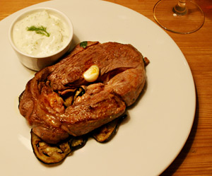

Lammgigot-Steaks mit Gurkenjoghurt
5 von 6Zutaten:
2 mittlere Auberginen
Salz & Pfeffer
Olivenöl zum Braten
1 TL. Rosenpaprikapulver
4 Lammgigot-Steaks (aus der Keule)
1 TL Thymian
1 TL Oregano
1 Salatgurke
360 Gr Joghurt (natur)
2 EL Olivenöl
3 TL Dill, gehackt
